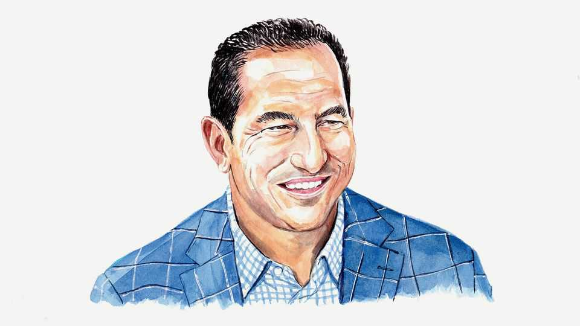

Authoritarians have a secret Achilles heel: City Hall
Mayors have become democracy’s most reliable defenders. American voters should take note, writes Alexander Heffner

Oct 1st 2026
ON NOVEMBER 3rd Americans will vote in midterm elections at a time when faith in the political process has perhaps never been lower. Nearly seven in ten Americans are dissatisfied with how democracy is working, according to the Pew Research Centre. But there is one remaining island of political functionality, where Americans can and should have grounds for optimism: City Hall.
President Donald Trump sat down recently with Zohran Mamdani—his third meeting with New York City’s mayor in less than a year—to discuss building up to 12,000 homes on a rail yard in Queens. The picture of these two men illustrates our global moment. Around the world, mayors have become the most reliable bulwark against authoritarian politics. Populist parties surge in regional and national elections but run into a brick wall when they try to capture city halls.
That helps explain why Mr Trump has had to warm to the democratic-socialist Mr Mamdani, whose popularity is driven by an agenda to address the same problems Mr Trump promised but has failed to solve in either of his terms. As Mr Mamdani told me at Four Freedoms Park, “I would say talk is cheap. If you really do believe in a high standard of living for everyone, then start to show it in your actions.”
Over the past year I interviewed mayors on three continents, including my own, and they shared insights that American politics is largely ignoring. To friends, I have called my journey—at least in part—“Democracy Out of America,” or Alexis de Tocqueville in reverse.
Consider Germany. The far-right Alternative for Germany made historic gains in recent state elections. Yet the party does not run a single German city of significant size, and it lost every big-city mayoral run-off it reached last year. In Portugal, the populist Chega party surged to second place in parliament last year, then won just three of 308 municipalities. In Romania, Bucharest’s mayor beat a far-right nationalist for the presidency.
It is no coincidence that authoritarians the world over have targeted mayors. Last year President Recep Tayyip Erdogan of Turkey jailed the mayor of Istanbul, his leading rival. In January Hungarian prosecutors charged the mayor of Budapest over staging a Pride march that the government had banned. (The charges were later dropped.) In 2018 Kremlin loyalists abolished direct mayoral elections in Yekaterinburg, Russia’s fourth-largest city, then led by one of the country’s last opposition mayors.
The mayors I visited span a left-right spectrum. In Lisbon, the centre-right mayor, Carlos Moedas, warned: “Countries with weak institutions are weak countries,” calling political extremism “a virus”. In Santiago, Chile, Mayor Mario Desbordes, a centre-right former police officer, talked tough on crime and illegal immigration. Yet he recalled standing in uniform over a fellow officer assassinated in 1989, under Augusto Pinochet’s dictatorship. Politics, he came to learn, is “not about friends or enemies”.
Why do cities hold? Partly because of who lives there—younger, more diverse, more educated voters—but also because the job is to deliver a collective good. Fiorello La Guardia, who was mayor of New York City from 1934 to 1946, is often credited with saying there is no Democratic or Republican way to fix a sewer. “If you’re a mayor, you don’t wait for federal government,” Stephan Keller, the mayor of Düsseldorf, told me. Either the pothole is filled or it isn’t, and unlike in national parliaments, competence is harder to fake than outrage.
Nowhere is that truer than in America, where none of the 50 largest cities is run by a MAGA-aligned mayor. In conversation after conversation, American mayors expressed revulsion at the toxic, partisan wasteland that federal politics has become. Worse, that toxicity, they said, is increasingly trickling down to the states.
A growing number of Americans appear to see mayors as the last public servants who still solve tangible problems. As gridlock stymies Washington, DC (and, increasingly, statehouses), the portfolio and profile of mayors are rising. A generation ago a mayor was judged on whether the garbage got picked up. Today mayors lead on everything from housing and homelessness to infrastructure, education, crime and climate resilience. They are inventive, too. Atlanta’s mayor, Andre Dickens, is building permanent housing from unused shipment containers amassed during the covid-19 pandemic.
Mayors are also symbols of the American future. Edward Glaeser, a Harvard economist, has argued that density makes cities engines of innovation. Increasingly, mayors—not states—appear to run the country’s “laboratories of democracy”. Americans trust local government more than any other level of government—65% do, according to Gallup, about twice the share that trusts Congress.
One of America’s hidden tragedies, then, is the effort by statehouses to kneecap their mayors. Texas bars its cities from regulating labour and property beyond what state law allows. Several states, including Iowa, Arkansas, Idaho and South Dakota, have banned their cities from running guaranteed-income pilots. The federal government, meanwhile, has sent National Guard troops into cities over their mayors’ objections.
America’s brand of mayoral pragmatism has its limits. Mike Duggan, Detroit’s mayor for 12 years, turned the city around and ran for governor as an independent. Facing headwinds from the two-party system, he dropped out earlier this year. Despite campaigns by Rudy Giuliani, Mike Bloomberg and Pete Buttigieg, no former mayor has become president since Calvin Coolidge a century ago. Europe, by contrast, has long elevated mayors to national leadership, from the legendary Willy Brandt of West Berlin to Britain’s newest prime minister, Andy Burnham.
In the run-up to the midterms, federal and state races are dominating the headlines. But Americans need to prioritise the values of mayoral politics in their votes. On November 3rd mayoral elections will occur in big and small cities alike, as well as votes to choose the governors and state legislators who often decide how much power mayors have. In these races, Americans have an opportunity to preserve and expand the one domain where politics seems to be working.■
Alexander Heffner is the host of “The Open Mind” on America’s Public Broadcasting Service. To celebrate its 70th anniversary the programme is airing a series called “Mayors of the World”.